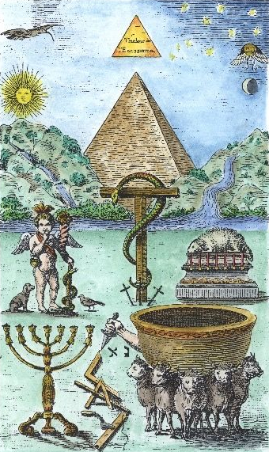
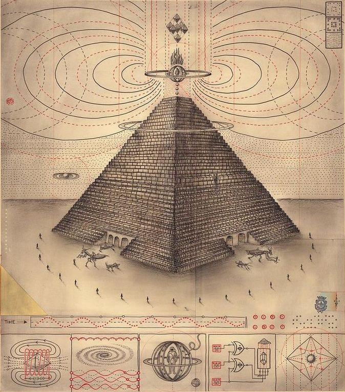
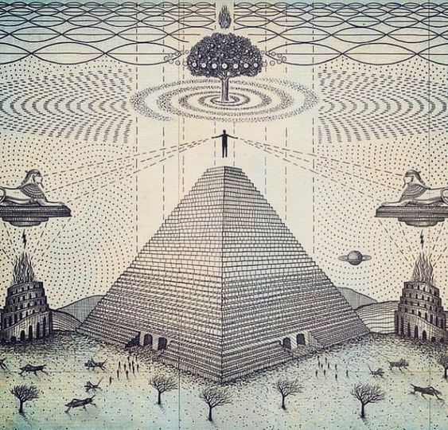
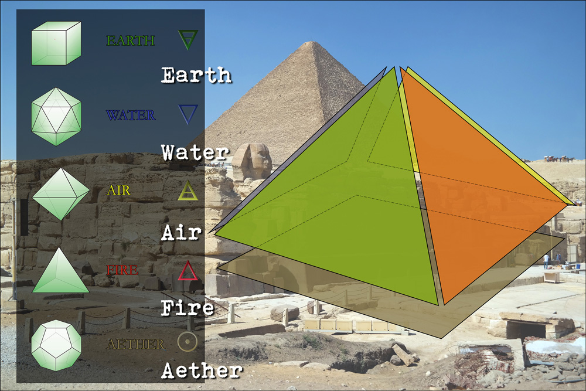
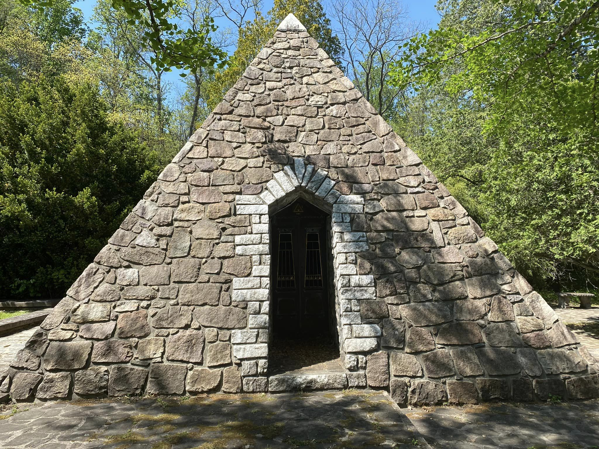
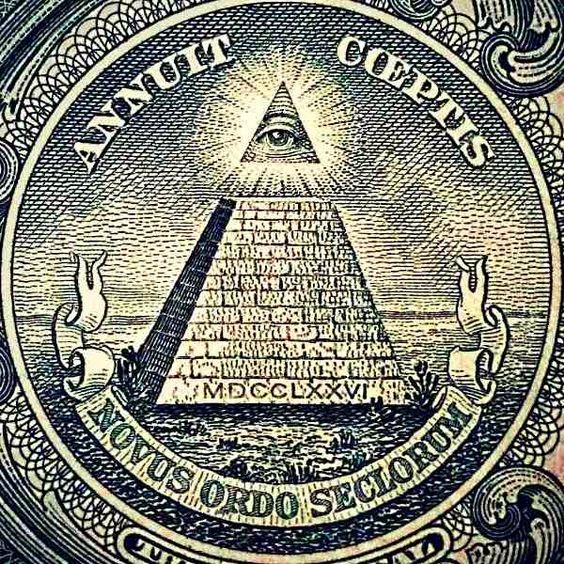

O Mistério da Pirâmide

Prefácio
As pirâmides, encontradas em várias partes do mundo, são monumentos enigmáticos que carregam um profundo simbolismo e mistério, refletindo a espiritualidade, o poder e a sabedoria das civilizações antigas que as construíram.
Símbolos de Ascensão e Eternidade
• Forma Triangular: A forma triangular da pirâmide é simbólica de ascensão. Cada lado triangular aponta para o céu, simbolizando a jornada da alma do ser humano para a vida após a morte. A base quadrada representa a terra, enquanto o vértice aponta para o céu, conectando o terreno ao divino.
• Eternidade e Imortalidade: As pirâmides foram construídas para durar eternamente, refletindo a crença egípcia na vida eterna. A robustez e a permanência das pirâmides simbolizam a imortalidade do espírito.
Sabedoria Cósmica
Ilustração de Daniel Martin Diaz • Alinhamento Astronômico: Muitas pirâmides, incluindo a Grande Pirâmide, estão alinhadas com precisão em relação às estrelas e aos pontos cardeais. Este alinhamento sugere um profundo conhecimento de astronomia e uma conexão com o cosmos. Os egípcios acreditavam que as pirâmides serviam como um meio para a alma do ser humano alcançar as estrelas e se unir aos deuses.
• Geometria Sagrada: A precisão matemática e geométrica das pirâmides também carrega simbolismo. A relação entre os lados da pirâmide e sua altura incorpora princípios de geometria sagrada, refletindo a crença na ordem e harmonia do Universo.
Poder Real e Divino
• Símbolo de Autoridade: As pirâmides do Egito foram construídas como tumbas para os faraós, simbolizando seu poder e autoridade. Elas eram vistas como um meio para assegurar a continuidade do reinado do faraó na vida após a morte, reafirmando seu status divino.
• Conexão com os Deuses: A pirâmide representava uma escada para o céu, uma estrutura física que permitia ao faraó ascender e se juntar aos deuses. Esta conexão era fundamental para a legitimidade do poder real.
Ritos e Mistérios de Iniciação
• Câmara do Rei e da Rainha: As câmaras internas das pirâmides, especialmente a Grande Pirâmide, têm sido interpretadas como locais de ritos de iniciação. A jornada através dos corredores escuros e câmaras simboliza a morte, renascimento e iluminação espiritual.
• Passagem para a Vida Após a Morte: A complexidade dos túneis e câmaras dentro da pirâmide representa a jornada da alma na vida após a morte. Passar por esses túneis simboliza a transição do ser humano de mortal para imortal.
Simbolismo Esotérico
Ilustração de Daniel Martin Diaz • A Esfinge: Próxima às pirâmides de Gizé, a Grande Esfinge representa o mistério e o enigma. Com o corpo de um leão e a cabeça de um faraó, simboliza a força, sabedoria e proteção.
• Câmaras Secretas e Passagens: As pirâmides estão repletas de câmaras e passagens secretas, simbolizando o conhecimento oculto e a busca pelo divino. Elas representam o caminho do iniciado, que deve passar por desafios para alcançar a iluminação.
Os Quatro Elementos: Fogo, Água, Ar, Terra
Os quatro elementos clássicos — Fogo, Água, Ar e Terra — são fundamentais em diversas tradições esotéricas e simbólicas. Na simbologia das pirâmides e outras estruturas místicas, esses elementos representam diferentes aspectos da existência e da criação.
Fogo
• Transformação e Energia: O Fogo é um símbolo de transformação, energia e poder. Ele representa a força vital e a capacidade de mudança e renovação. No contexto das pirâmides, o Fogo pode simbolizar a chama eterna da alma e a energia necessária para a jornada espiritual.
• Purificação: O Fogo é também um elemento de purificação, queimando impurezas e simbolizando a purificação da alma na vida após a morte.
Água
• Vida e Emoção: A Água simboliza a vida, emoção e intuição. É o elemento da fluidez e adaptabilidade. Na simbologia das pirâmides, a Água pode representar o fluxo da vida e a conexão com as emoções e o inconsciente.
• Renascimento: Assim como o Nilo traz vida ao Egito, a Água simboliza o renascimento e a renovação, essencial para a vida eterna.
Ar
• Mente e Espírito: O Ar é o elemento da mente, do espírito e da comunicação. Representa o sopro da vida e a conexão com o divino. Na simbologia das pirâmides, o Ar pode simbolizar a liberdade espiritual e a ascensão da alma.
• Movimento e Liberdade: O Ar, como elemento de movimento, simboliza a liberdade e a capacidade de elevar-se acima das limitações terrenas.
Terra
• Estabilidade e Fundação: A Terra simboliza estabilidade, solidez e fundamentação. É o elemento da estrutura física e da realidade material. Na simbologia das pirâmides, a Terra representa a base sólida sobre a qual a jornada espiritual é construída.
• Nutrição e Crescimento: A Terra é também o elemento da nutrição e do crescimento, fornecendo sustento e abrigo. Simboliza a fecundidade e o ciclo da vida.
Reflexão
Quakertown, Pennsylvania As pirâmides encapsulam um vasto simbolismo que vai além de sua função como túmulos reais. Elas representam a ascensão espiritual, a eternidade, o poder divino e a sabedoria cósmica. Os quatro elementos — Fogo, Água, Ar e Terra — acrescentam camadas de significado, refletindo os diferentes aspectos da existência e da criação. Juntos, esses símbolos formam uma rica tapeçaria de mistério e espiritualidade, convidando à contemplação e à busca pelo conhecimento profundo e eterno.
O Olho Que Tudo Vê e a Pirâmide Inacabada
O Olho da Providência no topo da pirâmide simboliza a vigilância divina e a supervisão do universo por um poder superior. No entanto, algumas interpretações sugerem que ele representa não apenas um olhar benevolente, mas também uma vigilância onipresente e, potencialmente, de forças ocultas e controladoras que operam nas sombras, construindo muralhas para obstruir a Luz divina do Criador.